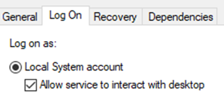

First, setup your [LastInitial][FirstName]DC1 virtual machine using the steps from the previous guides
REMINDER, DO NOT CHANGE YOUR AZURE HOSTS DNS OR IP ADDRESS SETTINGS UNDER ANY CIRCUMSTANCES, EVEN IF YOU THINK YOUR INSTRUCTOR TOLD YOU TO DO IT.
SETTING UP THE NETWORK BASED INSTALLATION (DC1)
- Add the DHCP Role
- Add the Windows Deployment Service role
- Make sure to Complete DHCP the configuration, before closing the role wizard (it can also be done after)
- Create a new DHCP scope, called Internal Network, with a Start IP address of 172.16.0.50 and an End IP address of 172.16.0.100.
- At the Configure DHCP Options page, select No, I will configure these options later.
- Activate the scope.
- Using the Software folder on the Host Azure VM’s Desktop. Mount the Windows 2019 Server ISO to the DC1 VM.
- Within Server Manager of DC1, configure your server under Windows Deployment Services.
- At the Install Options page, select Standalone server and click Next.
- At the Remote Installation Folder Location page, create a folder on the D:\ drive with the name RemoteInstall and choose that as its location. Click Yes when prompted.
- At the PXE Server Initial Settings page, select Respond to all client computers (known and unknown).
- Still in the Windows Deployment Services window, right-click Boot Images under your server and click Add Boot Image.
- Navigate to the mounted iso, go to the \sources folder, and select the boot.wim file.
- In the Windows Deployment Services window, right-click Install Images under your server and click Add Install Image.
- Use the default image group name.
- Go to \sources folder again, and select the install.wim file.
- Start your server in the WDS window.
-
-
CREATE A NEW VIRTUAL MACHINE FOR WDS
- Create a new Virtual Machine named [LastInitial][FirstName]DM1 on your Azure host, following only the first half of the guide (do not install windows).
- Make sure that the virtual machine is on the D: Drive
- At the Installation Options page, select Install an operating system from a network-based installation server.
- In Hyper-V select the child VM, click on Settings on the right column.
- Select SCSI Controller and add an additional 20 GB (D drive).
- Start and connect to your DM1 virtual machine and wait for the prompt to press F12 on your keyboard, this will start the installation process.
- If the DHCP times out, here are some possible solutions:
- You may have forgotten to complete the DHCP configuration.
- You may have forgotten to activate the DHCP scope.
- You may have forgotten to start the WDS server.
- If you already made DC1 into a domain controller, you will need to authorize the WDS server inside of the WDS window.
- If the DHCP or WDS roles on your DC1 say they are corrupt, remove the roles and re-add them to solve the issue.
- After selecting the locale and keyboard input method, click next and you should be prompted to provide a valid user name and password for an account on the WDS server, supply the computer and user name of your DM1 like so: dm1_vm_name\dm1_admin_username and the password Secret555.
- The rest of the installation should be standard following the guide.
INITIALIZATION OF SECOND DISKS
- Press Windows Key + R, enter “diskmgmt.msc” and click run.
- Right click Disk 1, click Online.
- Right click Disk 1 again and Initialize Disk.
- Make sure Disk 1, and MBR are both selected. Choose OK
- Right click the box right of Disk 1 and click “New Simple Volume”
- On the Format Partition page, give the storage a new name or click next, then click Finish
- Repeat for other VMs as needed
CONFIGURING DOMAIN SERVER (DC1)
- Add the Active Directory Domain Services role.
- On the Confirm installation selections page, click Install to install the files needed for Active Directory Domain Services. Do not close the wizard when the installation is finished.
- Click Promote this server to a domain controller to start the Active Directory Domain Services Configuration Wizard.
- Select Add a new forest, In the Root domain name text box, type YourLastNameProject.local
- Select a Forest functional level of Windows Server 2008, and a Domain functional level of Windows Server 2008.
- Type Secret555 for the Password.
- At the Prerequisites Check page, click Install. Your computer will reboot following installation.
- After your DC1 has restarted, log into YourLastNameProject.local, you may have to type “YourLastNameProject\Administrator” as the username
Within Server Manager, go to Local Server and then click the hyperlink next to your network interface.
In the Network Interfaces properties, go to Internet Protocol Version 4 (TCP/IPv4) and click Properties. Note that the Preferred DNS server has been set to 127.0.0.1, add the Azure Hosts IP address as secondary DNS.
ADDING DM1 TO THE DOMAIN
- On DM1, change the Preferred DNS to the IP of DC1 and move the current one to Alternate. Close the window
- On Server Manager (DM1), under Local Server on the left pane, select WORKGROUP then click Change and select Domain circle and enter in YourLastNameProject.local
- For the login prompt, it should be Administrator and Secret555 and afterwards it should show Welcome to YourLastNameProject.local domain message box.
CREATE A SERVER GROUP
- Turn off Windows Firewall (Public, Private, and Domain) on both DC1 and DM1.
- Open services.msc in DM1 and scroll down until you see Virtual Disk, right-click and select Properties
- For Startup drop down, choose Automatic then select Log On on the tabs at the top and make sure you select Allow service to interact with desktop. Now you may start the service.

- In the DC1 Dashboard, click Create a Server Group
- On the tabs, select Active Directory, click Find Now (both VMs should populate) then select both DM1 and DC1.
- Input an appropriate name for the group.
HOW TO ACCESS DISK MANAGEMENT
- In Server Manager, click on your server group on the left-hand pane.
- Right Click on DM1 and select Computer Management. (DM1 must be running).
- In computer management, click disk management to access the drives in DM1.
- If it is giving you an error saying “The RPC Server is Unavailable”, follow these steps
- Open Windows Powershell as admin and run this following command on both DC1 and DM1.
- netsh advfirewall firewall set rule group="Remote Volume Management" new enable=yes
- If no errors occur, disk management should load after you click on it.